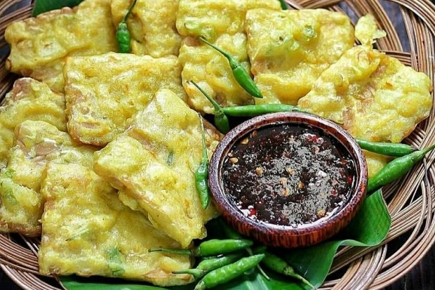

Purwokerto have some variety of iconic food that appeals to taste. The food is not expensive, the price is affordable, so dont worry!Here i serve you, some Purwokerto food!
_______________________
1. Tempe Mendoan

Tempe Mendoan is a snack which is also a must-have souvenir. Purwokerto’s Tempe Mendoan has thin slices and savory taste. It will taste more delicious if it is eaten with a spicy soy sauce. The making of Tempe Mendoan begins
with the selection of soybean seeds, cleaned and split in half, then placed on a banana leaf and fermented for two days. After that the fermented soybean is mixed with flour and spring onion, then fried. In Sawangan, near
Purwokerto Square, there are many sellers of Tempe Mendoan. The price per pack is Rp 15,000.
_______________________
2. Soto Kecik Sokaraja
Soto Kecik Sokaraja is Purwokerto’s unique culinary that should not be missed. Soto Kecik Sokaraja has a clear soup and contains bean sprouts, leeks, slices of meat, a sprinkling of colorful crackers, and a sprinkling of fried onions. If you like offal, then you can also choose it. The specialty of Soto Kecik Sokaraja is the ketupat and the peanut sauce. The ketupat is sliced and doused with soup soto. The peanut sauce can be mixed with soup soto or served separately. Soto Kecik Sokaraja can be found in Sokaraja, a small town east of Purwokerto. It’s about 8 kilometers from downtown Purwokerto. Price per serving is Rp 15,000.